Most recent in COS
He Who Marks the Crown
Written by: a pen without an ink and —H
Pictures by: Mark Dave Francisco Malonzo
Edited by: Cllarencefill
Pageantry is often associated with surface-level appeal and glamour but there's more to it than meets the eye. Behind the dazzling makeup and stunning attire lies a journey of self-discovery, perseverance and passion.
Mark Angelo San Juan, also known as MA, a BS Biology in Microbiology student, proves that he can shine the brightest as he is crowned as Mr. University-Morong 2023.
As everyone gave their best shot, MA added something that became vital to his winning, and it was his heart.
“I gave my heart into this journey, and my hundred percent effort towards the [pageant].”
MA, as a biology student, discusses his support for environmental empowerment and how it has influenced his pageant career.
"As a biology student, I have always known that our planet is in crisis," he said. "That's why I chose to be an advocate for environmental empowerment. Since we are experiencing a lot of environmental issues, I believe that my advocacy is very crucial in today's world to raise awareness about those issues and encourage everyone to take action to protect mother earth."
MA’s passion for the environment began to blossom during his early years of education where he learned about the importance of preserving and conserving our natural resources. As he progressed in his studies, he realized that advocacy is not just about expressing your opinion but also taking action to make a difference.
"When I joined the pageant, I saw it as an opportunity to amplify my advocacy and reach a wider audience. I wanted to use the platform to inspire people to take action no matter how small it may seem. And I'm grateful that I was able to do just that." He said.
However, MA's journey to the crown was not an easy one. He recalls that one of the major struggles he had was criticism and scrutiny that he eventually faced during his journey to the contest. But despite of all those condemnations, he used them as opportunities to grow and did not let criticisms impede his spirit.
"One of the major struggles that I faced during the pageant season was the criticism," he said. "Being a contestant for this pageant placed me in a competitive environment where I received a lot of criticism. But I took those criticisms constructively. Because I know that there is still room for improvement."
On the other hand, MA was also passionate about other activities but he soon realized that his interests were changing. While he found this disheartening, MA embraced the change and saw it as an opportunity to explore new hobbies and passions.
"I've just come to the realization that I no longer feel as passionately about my former activities. Despite the fact that I find this to be disheartening, I am aware that it is a normal aspect of life and that our interests might change over time." He said. "I'm willing to try out new hobbies and interests as long as they push me in fresh ways and thrill me. In fact, I see this as a chance to expand my horizons and find new passions." He added.
MA's story serves as an inspiration to those who may be facing challenges in their personal growth and development. His journey to the crown was more than just about charm and charisma but rather a celebration of his perseverance and self-discovery. It is evident that pageantry is more than just a contest of beauty and charm. It is a platform for personal growth, advocacy and social change. MA's inspiring story reminds that pageantry is like a diamond, on the surface we can see its splendid and alluring outlook but when you dig deeper behind all of it, it is the hard work, dedication, pressure and refinement that shape him that truly makes him shine.
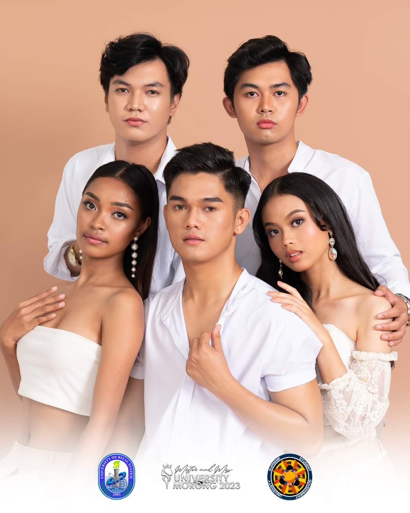
Coronation Night
The most anticipated event is here! Crowning of the newest Mr. and Ms. University Morong will happen tomorrow, live at the Eulogio Amang Rodriguez Tangahalang Sining (EARTS) at 4:00 in the afternoon. Make sure to ready your loudest screams for Catherine, Michaela Gayl, Mark Angelo, Ferdinando and Akira Evan as they take a walk along another journey of their lives, strutting their way to be crowned as the Mr. and Ms. University- Morong!
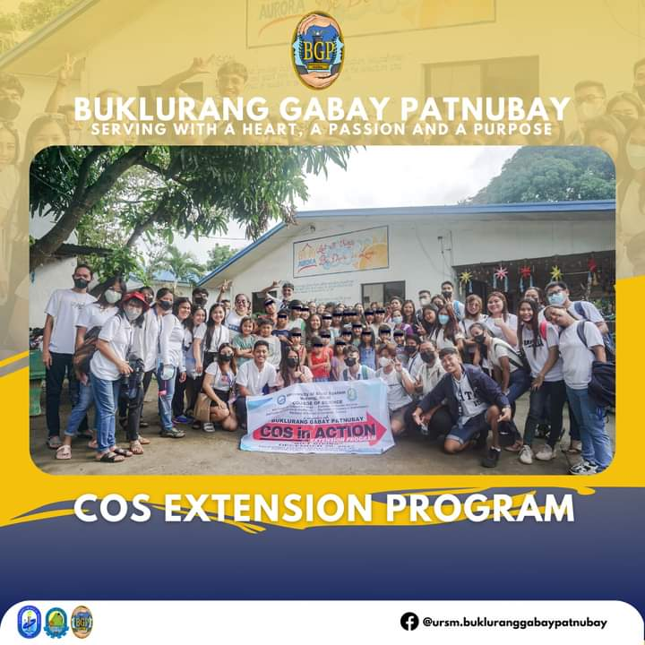
𝟒 𝐃𝐀𝐘𝐒 𝐓𝐎 𝐆𝐎!!!
COLLEGE OF SCIENCE, are you ready to be mesmerized? If yes, hurry and reserve your seats to witness the highly anticipated event of the University of Rizal System- Morong. Catch out these five candidates of COS at the most spectacular event of URS-Morong on May 3, 2023.
Buy your tickets now!
𝐓𝐈𝐂𝐊𝐄𝐓 𝐏𝐑𝐈𝐂𝐄𝐒:
𝐕𝐈𝐏 - 𝟑𝟎.𝟎𝟎
𝐑𝐄𝐆𝐔𝐋𝐀𝐑 - 𝟐𝟎.𝟎𝟎
Ticket-selling coordinators per college:
1. CARLOS MIGUEL FRANCISCO- COE
2. DANIECA VIRAY - CIT
3. LORENZ PAUL GUTIERREZ - COS
4. RENZ TIMOG - COENG
Special thanks to the Official Photographer of MMU-Morong : Zenki Bautista
#URSM
#URSMUSSG
#MMUMorong2023
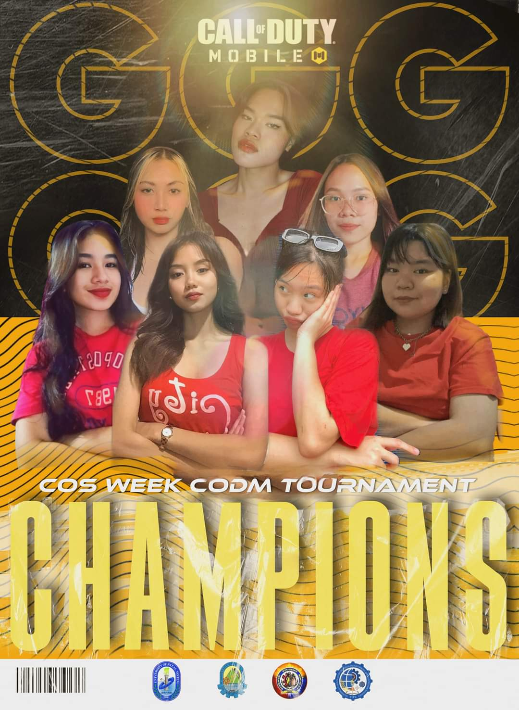
𝗖𝗢𝗦 𝗪𝗲𝗲𝗸: 𝗘-𝗦𝗽𝗼𝗿𝘁𝘀 𝗧𝗼𝘂𝗿𝗻𝗮𝗺𝗲𝗻𝘁
Pagpupugay para sa mga mag-aaral ng Sikolohiya na sina Smile Fernandez, Kimberly Revez, Cindy Orolfo, Karen Sarmiento, MK Policarpio, Marose Borja, at Kate Matematico na siyang bumubuo ng GGG ESPORTS. Sila ay nagkamit ng pagkapanalo sa ating palaro. Sila'y nakatanggap ng medalya, sertipiko, tropeyo, at karagdagan medalya para sa MVP ng ating palaro.
Maraming salamat at mabuhay kayong lahat!
Layout by: Arlorin Therese De Castro, TIPA
#TIPAUrsMorong #TIPA #COSWeek2023
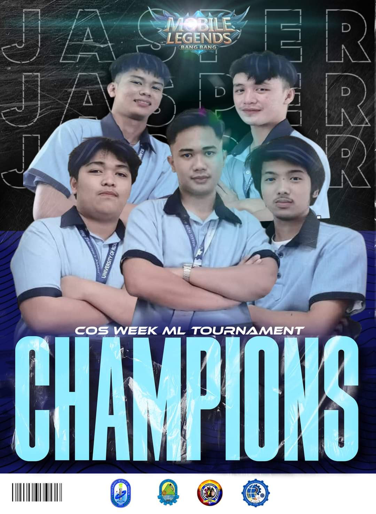
𝗖𝗢𝗦 𝗪𝗲𝗲𝗸: 𝗘-𝗦𝗽𝗼𝗿𝘁𝘀 𝗧𝗼𝘂𝗿𝗻𝗮𝗺𝗲𝗻𝘁
Pagpupugay para sa mga mag-aaral ng Sipnayan na sina Jesriel A. Salcedo, Danilo J Estremos Jr, Bryan G. Mendoza, John Emmanuel T. Atanacio, Jasper Cabatas, at Zedrick Kyle Severo na bumubuo ng BAKA JASPER TO. Silang anim ang nagkamit ng pagkapanalo sa ating palaro. Sila'y nakatanggap ng medalya, sertipiko, tropeyo, at karagdagan medalya para sa MVP ng ating palaro.
Maraming salamat at mabuhay kayong lahat!
Layout by: Arlorin Therese De Castro, TIPA
#TIPAUrsMorong #TIPA #COSWeek2023
#COSSarap #COSSatinAngKorona #BringBackTheCrown
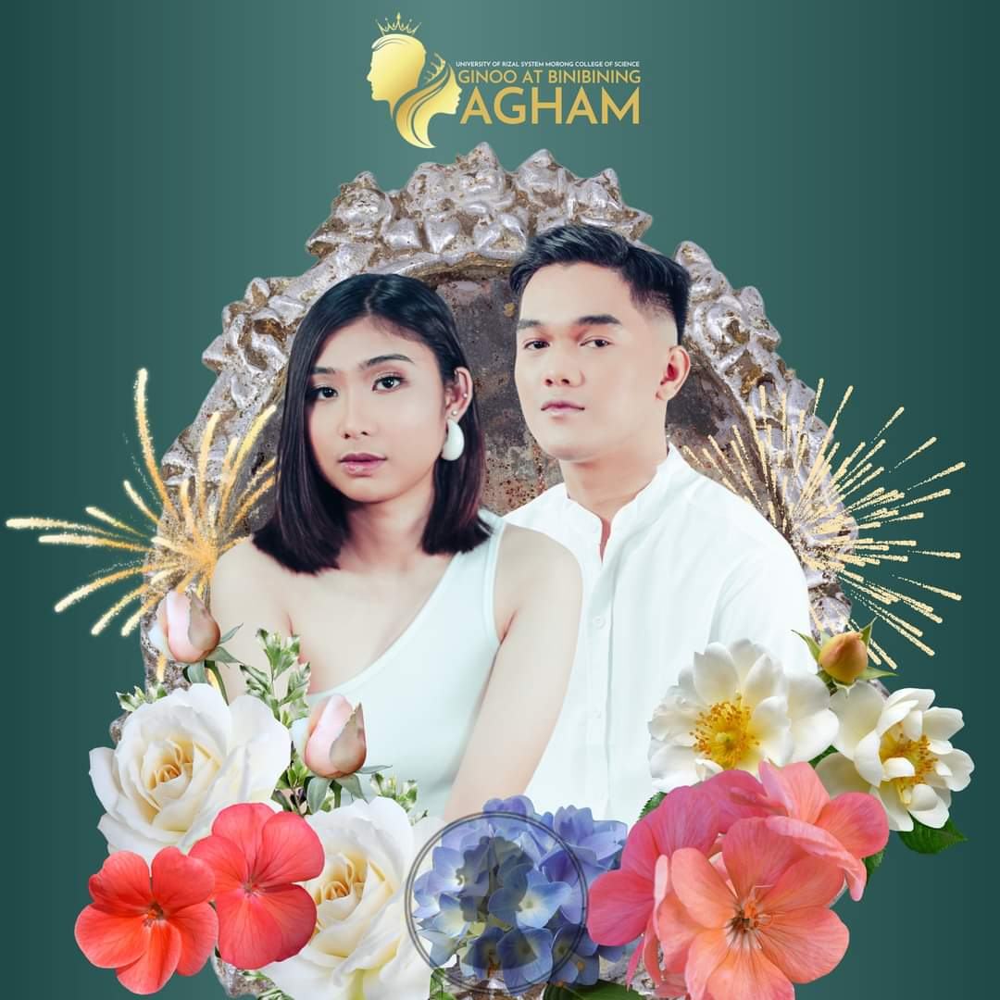
Binibining Agham has finally found the diamonds of the season!
Ladies and gentlemen, this year's Ginoo at Binibining Agham has finally found the diamonds of the season! And they're none other than, Mr. Ferdinando Rafanan of BS Mathematics, and Ms. Geralyn Mae Lastica of BS Computer Science.
1st Runners Up: Mr. Kian Louis Garcia and Ms Nicole Tañega
2nd Runners Up: Mr. Angelico Quitalig and Ms. Catherine Sanchez
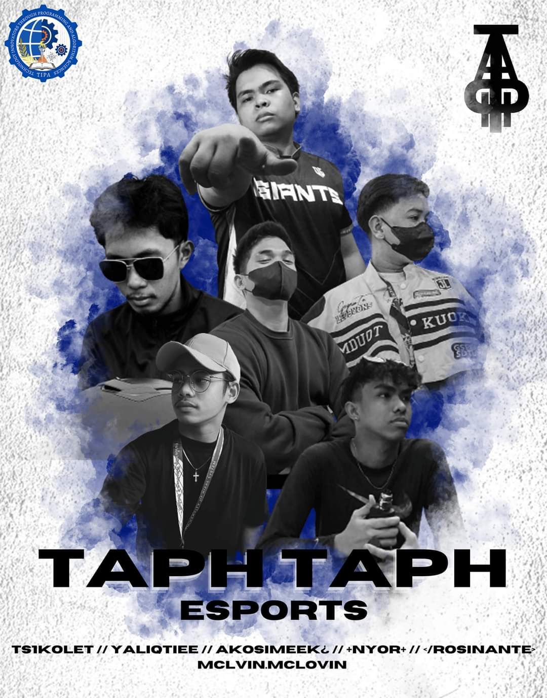
𝗠𝗮𝗯𝘂𝗵𝗮𝘆 𝗖𝗢𝗦 𝗚𝗮𝗺𝗲𝗿𝘀!
Sa darating na ika-21 at 22 ng Pebrero, gaganapin ang COS Week: E-Sports Tournament na may temang "Comeback from Pandemic!". Dito, isasagawa ang dalawa sa mga sikat na laro sa kasalukuyan, ito ay ang mga palarong Call of Duty: Mobile.
Narito ang mga kupunan na mula sa kani-kanilang mga kurso na sasabak sa hamon.
College of Science Student Body - COSSB
#TIPAUrsMorong #TIPA #CollegeofScienceStudentBody #COSWeek2023
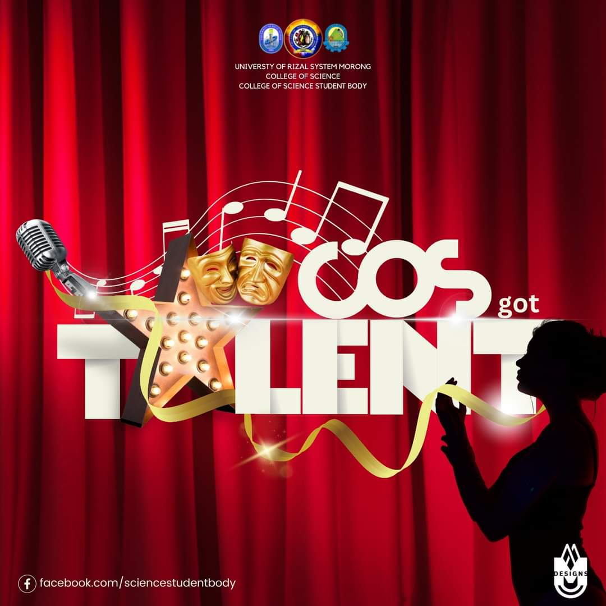
COS Got Talent
The University of Rizal System- Morong College of Science is not only made up of intelligent but of talented and ingenuine individuals as well, anticipate the thrill and excitement as the URSM College of Science Student Body invite you to join and witness the COS got Talent on the 22nd of February 2023, 1:00PM-5:00PM!
See you, COSkada!
#cosgottalent
#ursmcosweek
PubMat designed by: Michelle Ann Dequiña
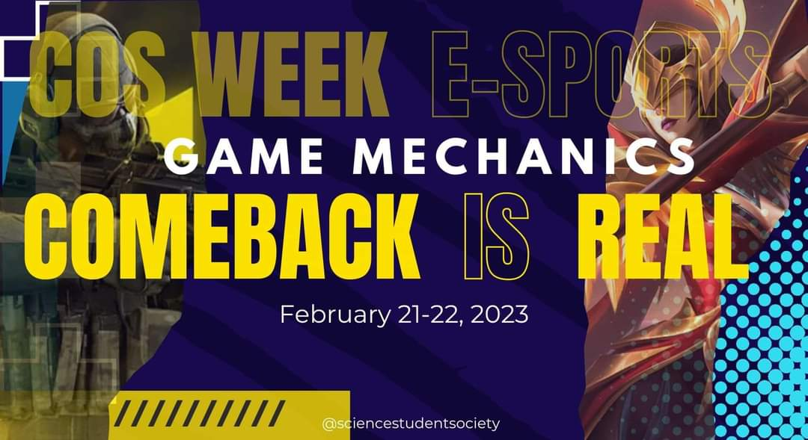
COS WEEK E-Sports "Comeback is REAL"
Heads up GIANTS! Are you ready for ONLINE CLASH? Do you have what it takes to conquer victory through online gaming and looking for the opportunity to prove your skills? We're bringing you COS WEEK E-Sports "Comeback is REAL"
So, if you have the skills and interest to join this Open Esports tournament, come on and register now! 👇
For inquiries, kindly message:
College of Science Student Body (COSSB)
facebook.com/sciencestudentbody
Or look for COSSB Officers:
Lorenz Paul Gutierrez
Jowenn Anne Cabrera
Below is the Registration Form:
google.com/forms
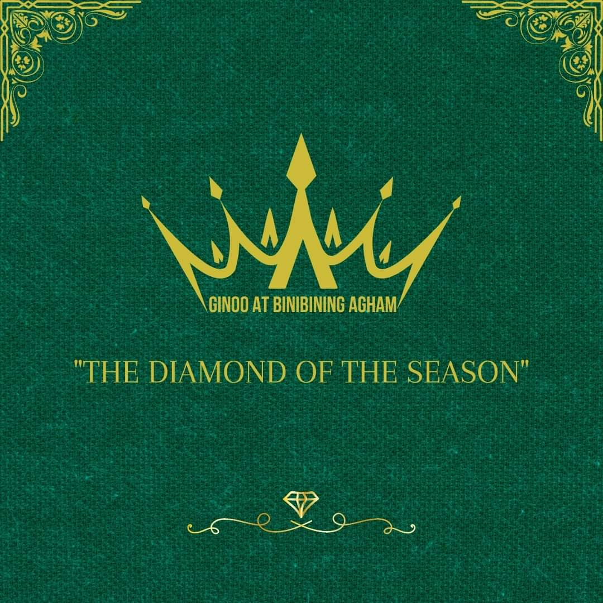
Dear Readers,
We're soaring over the illustrious University of Rizal System- Morong Campus College of Science in all of its splendid glory! Distinguished gentlemen tip their hats. Fashionable ladies take their strolls. And it's all vibrance and gaiety, swagger and style, as we launch this Facebook page, disseminating the news... we are in search for the diamond of the season!
Share this post and tap your classmates as they might be the one we're looking for.
Love,
Lady Whistledown
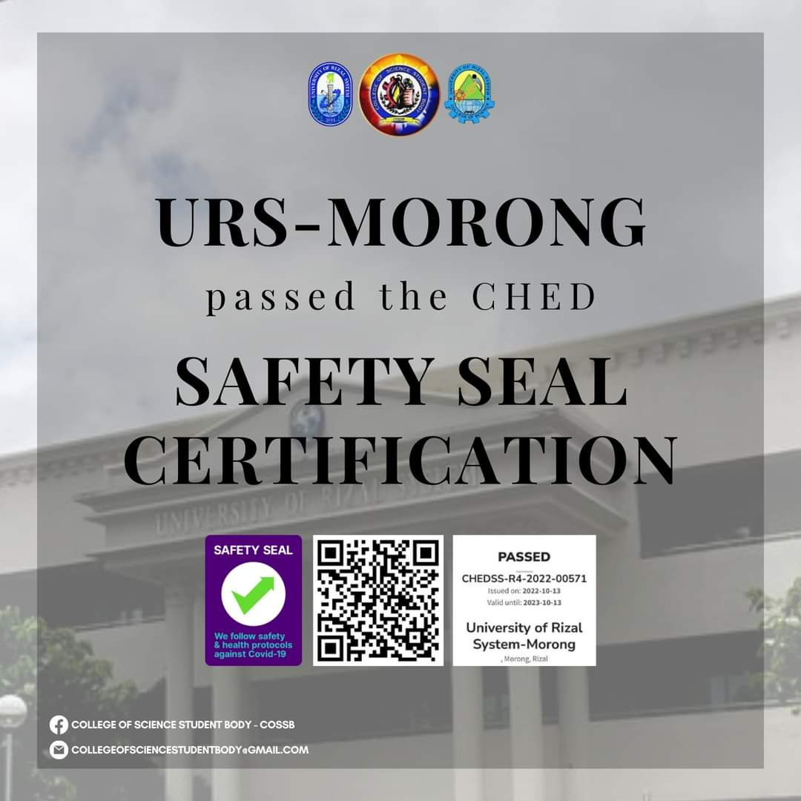
URS-M was granted with the Safety Seal Certification by CHED.
Face to face classes is about to get real as URS-M was granted with the Safety Seal Certification by CHED.
#LigtasNaBalikEskwela
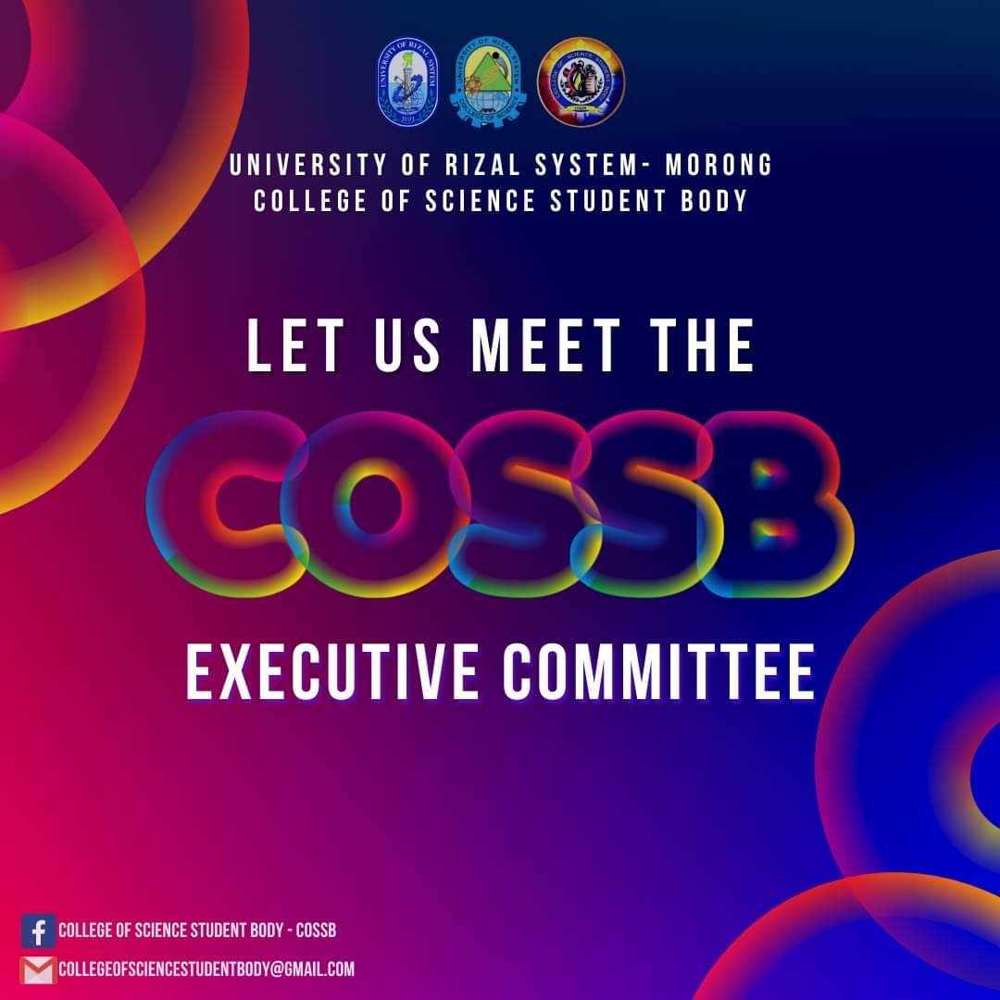
The new set of officers to be leading the College of Science, School Year 2022-2023!
COSSB is proud to announce the new set of officers to be leading the College of Science, School Year 2022-2023! They are more than ready to be standing up with students in their College, and give you events that will surely give you the thrill to uplift your college spirits!
"Before you are a leader, success is all about growing yourself. When you become a leader, success is all about growing others." —Jack Welch
#URSMGIANTS
#COSSBYesNaYesForYou
"IGNITING THE SPIRIT OF SERVICE"
Last December 2022, Buklurang Gabay Patnubay, along with Bachelor of Human Services students and College of Science Organizations, led the COS in ACTION "Lingap Komunidad," a College of Science Extension Program.
We are blessed to have two locations to distribute gifts this year, and we hope to have more locations in the next program.We would like to express our gratitude to the URSM College of Science for trusting us to make this possible, to the College of Science Organizations, all Human Services students, residents of Bahay Aurora and Purok Pulo and to all Blessed people that support us to make this event more successful.